Yapay zeka
LLM ajanları, çok ajanlı konseyler, RAG, computer vision.
Bilgisayar Mühendisliği · 3. sınıf · Bitlis Eren Üniversitesi
Ben Mustafa Kemal Çıngıl. Yapay zeka, sistem yazılımı ve web üzerine çalışıyorum; verisi yerelde kalan araçlar, MCP sunucuları ve ajanlar geliştiriyorum. Akşamları da KemalChords adıyla müzik yapıyorum.
const mustafa = {
bolum: "Bilgisayar Müh.",
sinif: 3,
odak: ["AI", "Sistem", "Web"],
diller: ["Go", "Rust", "TS", "Python"],
repo: 68,
};Kod yazmak benim için bir problemi anlamakla başlıyor. Yapay zeka belki de en güçlü aracımız; ama araç ne kadar güçlü olursa olsun sonucu onu kullananın karakteri belirler. Önce derdi anlayacaksın, sonra modeli kuracaksın.
01 — Mühendislik
Bir modeli eğitmekle bitmiyor; veriyi okuyan ayrıştırıcıdan, onu saklayan veritabanına, kullanıcının dokunduğu arayüze kadar hepsini kendim kuruyorum.
LLM ajanları, çok ajanlı konseyler, RAG, computer vision.
Hızlı, erişilebilir, sade arayüzler; masaüstünde Tauri.
Tek ikili Go sunucuları, Rust ile ağ ve dosya işleri, otomasyon.
SQLite (WAL, FTS5), Postgres, Redis; Raspberry Pi ve ESP32.
02 — Öne çıkan proje · 2026
Instagram ve WhatsApp dışa aktarımlarını tamamen kendi bilgisayarında analiz eden yerel uygulama. Tek bir Go ikilisi: motor, HTTP sunucu, gömülü React arayüzü ve komut satırı.
Yapay zekasız, ücretsiz: kim daha çok yazıyor, konuşmayı kim başlatıyor, hangi saatlerde, uzun sessizlikler nerede. 1.000. mesaj, en yoğun gün, dönüm noktaları zaman çizelgesine düşer.
Kimin kiminle ne kadar bağlı olduğunu bir ağ olarak gösterir; yakın ve geniş çevre ayrılır. İlişki etiketleri sen onaylamadan konmaz.
Freud'dan Foucault'ya 13 kuramsal mercek kanıt paketine bakar; her cümle K1, K2 gibi kanıt numaralarına bağlıdır. Moderatör karşılaştırır, sentez birleştirir, her iddia ayrıca doğrulanır.
Sunucu yalnızca 127.0.0.1'de dinler. Modele giden kesitlerde telefon, e-posta, IBAN, TC kimlik maskelenir; göndermeden önce tam metni ve tahmini maliyeti görürsün.
03 — Açık kaynak
Biome, ZITADEL, Payload, Hono ve Model Context Protocol gibi projelere gönderdiğim pull request'ler. Liste GitHub'dan canlı güncelleniyor.
Gönderdim, bakımcıların bakmasını bekliyor.
Kabul edilip projeye giren değişiklikler.
GitHub'dan alınan son durum · 6 farklı projeye
04 — Seçili işler
Damla damla değil, nehir gibi.
Linux için IDM tarzı indirme yöneticisi. 32'ye kadar paralel bağlantı, tarayıcı eklentisi, yt-dlp ile 1000+ siteden video; HLS ve DASH dahil.
Terminalde otonom AI ajanı.
Siber güvenlik, CTF çözümü ve kod analizi için. 20+ AI sağlayıcı, 60+ araç, Türkçe arayüz, kalıcı bellek, çok ajanlı koordinatör.
Ulusal zararlı bağlantı listesi, ajanın elinde.
USOM listesi için MCP sunucusu: URL, domain ve IP kontrolü. ~2 ms sorgu, 496 bin kayıt yerelde önbellekte, kendi alan adlarını izleme.
Council-based Unified Thinking Engine.
Birden çok yapay zeka ajanının tartışıp karar ürettiği konsey tabanlı karar destek sistemi. React, Node.js, PostgreSQL, Redis, SSE.
The AI is the worker. Codchestra is the conductor.
Terminal için döngü tabanlı yapay zeka orkestrasyonu: işi parçalar, ajanlara dağıtır, sonucu döngüde denetler.
Kamu verisini ajanlara bağlamak.
İşi bir kez kur, sonra kendi aksın.
800+ üretimde test edilmiş iş akışı ve 22 hazır şablon: AI asistanları, veri işleme hatları, uygulama entegrasyonları. İki repoda toplam 55 yıldız, en çok yıldızlı işlerim.
Minecraft'ta yapay zekayla sohbet.
PaperMC 1.21.8 için Gemini destekli oyun içi sohbet eklentisi. /ai ile konuşulur, /model ile model seçilir, sohbet geçmişi tutulur. Her oyuncu kendi API anahtarını girer.
Türkçe NLP için açık veri.
Şarkı sözleri ve metadatasından oluşan açık kaynak Türkçe veri seti. Hugging Face ve Kaggle'da herkese açık.
Raspberry Pi 5'i monitörsüz kurar.
SD kartı bulur, imajı indirir, Wi-Fi ve SSH'ı ayarlar, diske yazar. Windows, macOS ve Linux'ta çalışan masaüstü uygulaması.
05 — Yolculuk
Python, algoritmalar ve veri yapıları.
HTML/CSS/JS, OpenCV ile computer vision, açık kaynağa ilk katkı.
Bitlis Eren Bilgisayar Mühendisliği. React, TypeScript, n8n otomasyonları, ESP32.
Freelance web geliştirme, RAG ve fine-tuning çalışmaları.
E.D.A kuruldu, Teknoloji Kulübü başkanlığı, ilk MCP sunucuları.
Go ile joe, Rust ile Nehir, T3 Vakfı eğitmenliği, E.D.A Hukuk.
06 — Roller
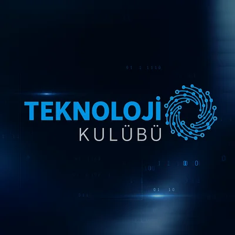
Web, AI ve IoT atölyeleri, hackathonlar, sektör buluşmaları.
1100+ öğrenciye verilen on aylık burs kapsamında AI, web ve açık kaynak mentorluğu.
İşletmeler ve hukuk büroları için yapay zeka asistanları.
Akademinin eğitim programlarını kampüsteki öğrencilerle buluşturuyorum.
React, Next.js ve Tailwind ile landing page, portfolyo ve küçük ölçekli uygulamalar.
07 — Girişim
Kurduğum girişimde iki ürün geliştiriyorum: kurumsal siteler için E.D.A Connect, avukatlar için E.D.A Hukuk.
Çağrı merkezinin yerini alan, 7/24 çalışan yapay zeka asistanı. Çoklu dil, tek tıkla WordPress kurulumu.
Siteye git ↗Resmi kaynaklardan veri çeken ve hukuki metin yazan bir ajan.
08 — Kod dışında
Uzun bir kod gününün ardından gitar, piyano ya da viyola. Alternatif R&B, neo-soul ve lo-fi; besteden kapağa, miksajdan yayına tüm prodüksiyon bende.
Albümler
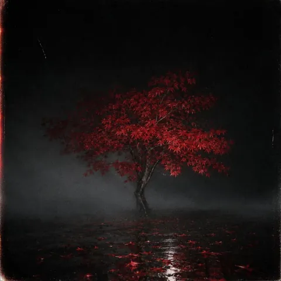
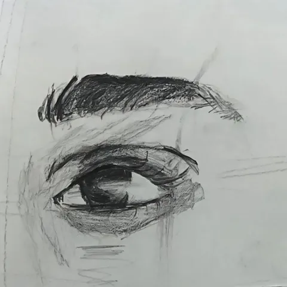
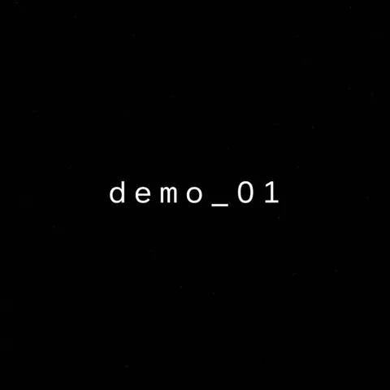
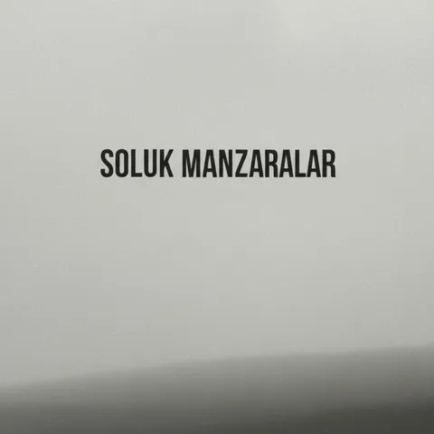
Single'lar
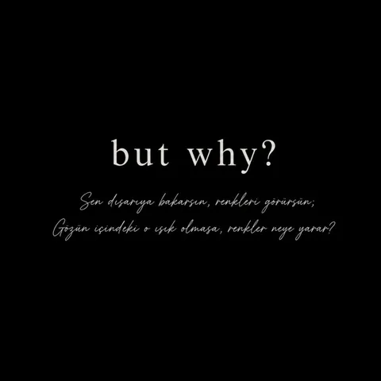
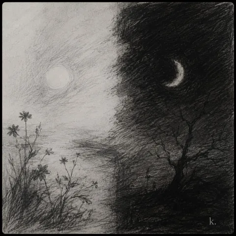
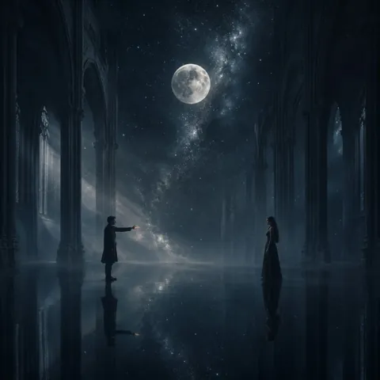
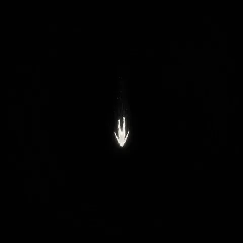
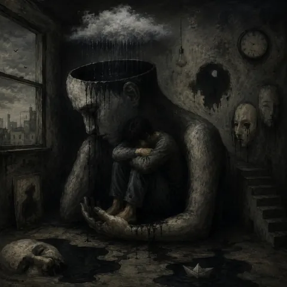
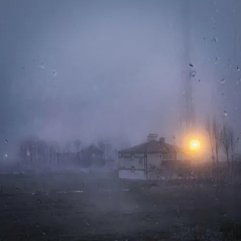
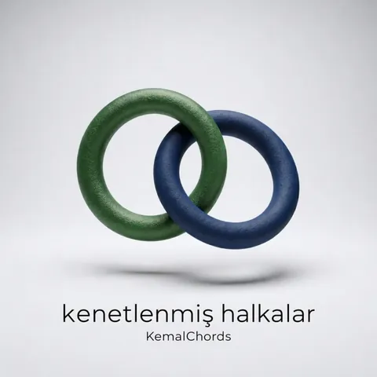
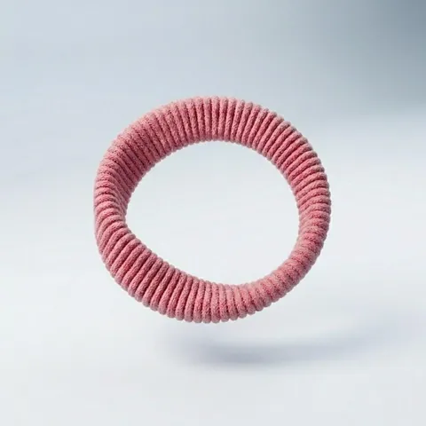
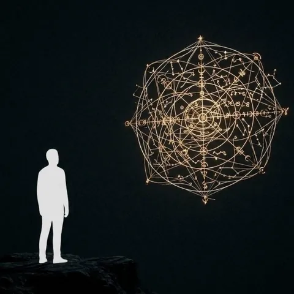
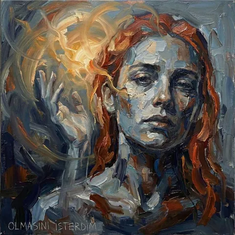
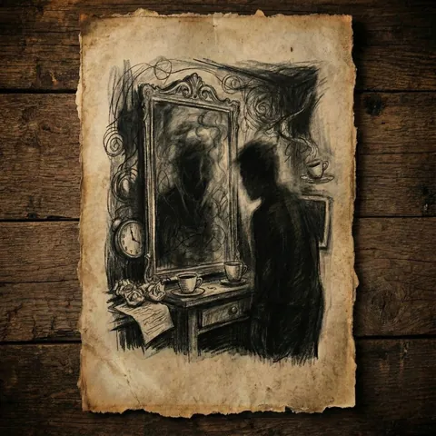
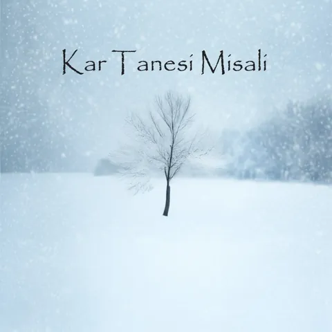
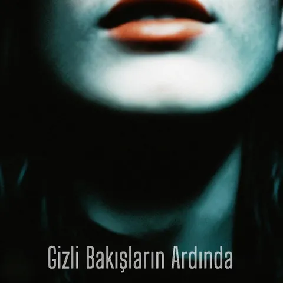
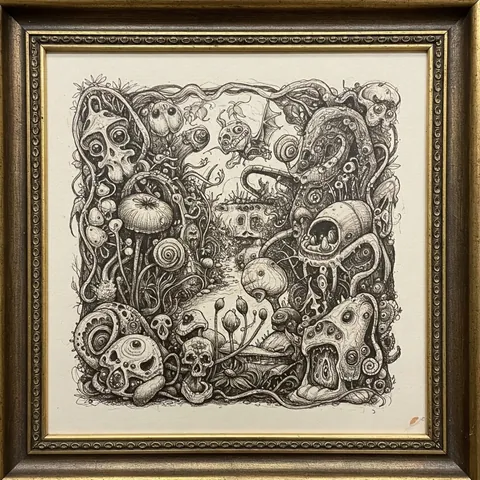
09 — Hakkında
Mustafa Kemal Çıngıl (adı Mustafa Çıngıl ya da Kemal Çıngıl olarak da geçer), Bitlis Eren Üniversitesi Bilgisayar Mühendisliği 3. sınıf öğrencisi ve yazılım geliştiricisidir. Yapay zeka, sistem yazılımı ve web üzerine çalışır; joe, Nehir ve usom-mcp gibi projeler geliştirir, Biome ve ZITADEL gibi açık kaynak projelere kabul edilmiş katkıları vardır. Kahramanmaraş'ta doğdu, Antalya'da büyüdü; müzik yaparken KemalChords adını kullanır.
KemalChords, Mustafa Kemal Çıngıl'ın müzik projesidir. Alternatif R&B, neo-soul ve lo-fi türünde şarkılar yazar; besteden düzenlemeye, kapak görselinden miksaja tüm prodüksiyonu kendisi yapar. Spotify'da 10 bin+ dinleyicisi, yedi albümü ve 21 single'ı vardır.
joe, Instagram ve WhatsApp dışa aktarımlarını tamamen kullanıcının kendi bilgisayarında analiz eden yerel bir uygulamadır. Tek bir Go ikilisi olarak çalışır; veri bilgisayardan çıkmaz, yapay zekâya yalnızca maskelenmiş ve kullanıcının onayladığı kesitler gider. GitHub'da joe
Nehir (Linux için çok bağlantılı indirme yöneticisi, Rust), usom-mcp (Türkiye'nin ulusal zararlı bağlantı listesi için MCP sunucusu), C.U.T.E (çok ajanlı karar konseyi), MineAI (Minecraft için yapay zekâ sohbet eklentisi), n8n otomasyon koleksiyonları ve kandilli-mcp gibi MCP sunucuları. Hepsi GitHub'da MustafaKemal0146 hesabında.
E.D.A (Expert Digital Assistant), Mustafa Kemal Çıngıl'ın kurduğu yapay zekâ girişimidir. İki ürünü vardır: kurumsal siteler için 7/24 çalışan E.D.A Connect ve avukatlar için geliştirilen E.D.A Hukuk (geliştirme aşamasında). expertdigitalassistant.com
Bitlis Eren Üniversitesi Teknoloji Kulübü'nün başkanıdır (2025'ten beri), T3 Vakfı'nda eğitmen mentor olarak görev yapar (Ocak 2026'dan beri) ve BTK Akademi'nin Bitlis Eren Üniversitesi temsilcisidir.
E-posta: ismustafakemal0146@gmail.com. Ayrıca LinkedIn ve GitHub üzerinden ulaşılabilir. Genellikle 24 saat içinde yanıt verir; Türkçe ve İngilizce çalışır.
“En iyi model bile bir insanın derdini çözmek için var. Önce o derdi anlayacaksın.”
— Mustafa Kemal Çıngıl